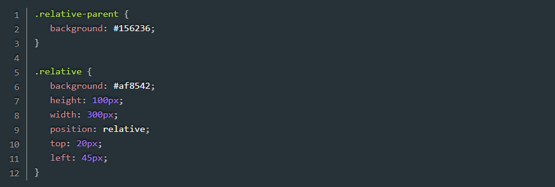
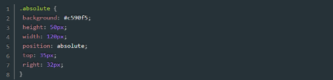
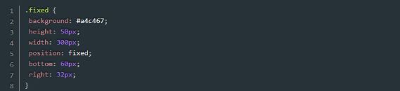
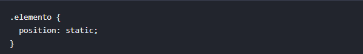

Conteúdo principal

1.1 Position Static O position: static é o valor padrão do CSS para todos os elementos HTML. Ele mantém o elemento no fluxo normal do documento, seguindo a ordem do código (empilhado) e ignora propriedades de posicionamento (top, right, bottom, left, z-index). É o comportamento "natural" sem posicionamento especial.

1.2 Position relative A primeira opção de posicionamento para um elemento é a relative. Como o nome sugere, ela especifica uma posição relativa do elemento em relação a algo: o elemento pai.A posição é definida através de quatro outras propriedades: top, bottom, left e right, que indicam a distância com relação ao topo, base, esquerda e direita, respectivamente, tomando como referência o posicionamento do elemento pai.

1.3 Position absolute A segunda opção de posicionamento é a “absolute”. Ela faz com que o elemento “saia” da hierarquia estabelecida pelo HTML – na prática, ele é filho da página e não de um elemento qualquer no HTML definido. Assim, é possível posicionarmos esse elemento em qualquer lugar da página, independentemente do que temos lá. Isso pode ser útil em casos que precisamos posicionar um alerta em nossa página, por exemplo, e não queremos “quebrar” o layout.

2.4 Position fixed Por fim, temos a opção “fixed”, que funciona de forma diferente em relação às demais. Embora seja parecida com o posicionamento absoluto, com “fixed” o elemento “responde”, em termos de layout, ao navegador. Isso significa que, mesmo que naveguemos na página para cima e para baixo, o elemento ficará fixo na mesma posição sempre.

2.5 Position sticky Position: sticky é uma propriedade CSS que permite a um elemento alternar entre relative e “fixed” com base na rolagem da página. Ele age como um elemento normal até atingir uma posição de gatilho definida (como top: 0), tornando-se fixo dentro do seu contêiner pai enquanto o usuário continua a rolar

O display:inline funciona basicamente como um paragrafo, ele corta a linha para baixo quando não á mais espaço para os lados, não tendo como manipular o tamanho da inline manualmente
O display flex no CSS é uma maneira de organizar elementos em uma página da web. Imagine uma caixa grande chamada "contêiner", onde você pode colocar várias caixinhas menores. Com o display flex, você pode arrumar essas caixinhas de forma organizada, deixando elas se ajustarem sozinhas dentro do contêiner. Isso é importante porque ajuda a criar páginas que ficam bonitas e funcionam bem em diferentes tamanhos de tela, como em celulares e computadores
Quando usamos display: inline-flex, o elemento pai se comporta como um container flexível, mas sua largura é ajustada automaticamente de acordo com o conteúdo dentro dele. Isso significa que display: inline-flex é mais adequado para elementos que precisam se ajustar ao tamanho do conteúdo, como botões ou blocos de texto em linha.
Basicamente o CSS Grid divide a tela em uma grade de linhas e colunas, oferecendo um conjunto de propriedades para manipular elementos das formas mais variáveis possíveis.
Display: inline-grid no CSS cria um contêiner de grade (grid) que se comporta como um elemento inline na página. Diferente do display: grid (que é um bloco e ocupa toda a largura), o inline-grid permite que outros elementos fiquem ao seu lado, ocupando apenas o espaço necessário para o conteúdo.
O termo display: block-flow faz parte da nova sintaxe "multi-palavras" da propriedade display no CSS Moderno (definida no CSS Display Module Level 3). Antigamente, as palavras-chave eram simples (como block, inline, flex). Agora, elas são divididas em duas partes: o tipo de exibição externa (como ele se comporta em relação aos vizinhos) e o tipo de exibição interna (como ele organiza os filhos)
Display: block-grid é um valor experimental de CSS ligado ao CSS Grid Layout. Ele foi proposto para permitir que um elemento funcione como um bloco normal, mas herde a grade (grid) do elemento pai. Em outras palavras, ele serviria para reutilizar as mesmas colunas/linhas da grid do pai sem precisar redefinir tudo.
display: block flow-root é um valor moderno do CSS que combina dois comportamentos de layout: block → o elemento se comporta como um bloco (ocupa toda a largura disponível e quebra linha). flow-root → o elemento cria um novo Block Formatting Context (BFC).
É uma especificação moderna que define o comportamento interno e externo de um elemento: ele faz com que o elemento se comporte como inline em relação aos vizinhos, mas estabeleça um contexto de formatação de bloco internamente.
Ao controlar o fluxo do texto, usar a propriedade CSS `display: inline` fará com que o texto dentro do elemento seja quebrado normalmente.Já a propriedade `display: inline-block` quebrará o elemento para evitar que o texto ultrapasse os limites do elemento pai.